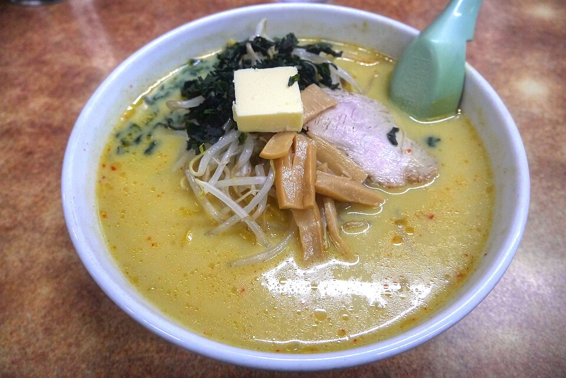
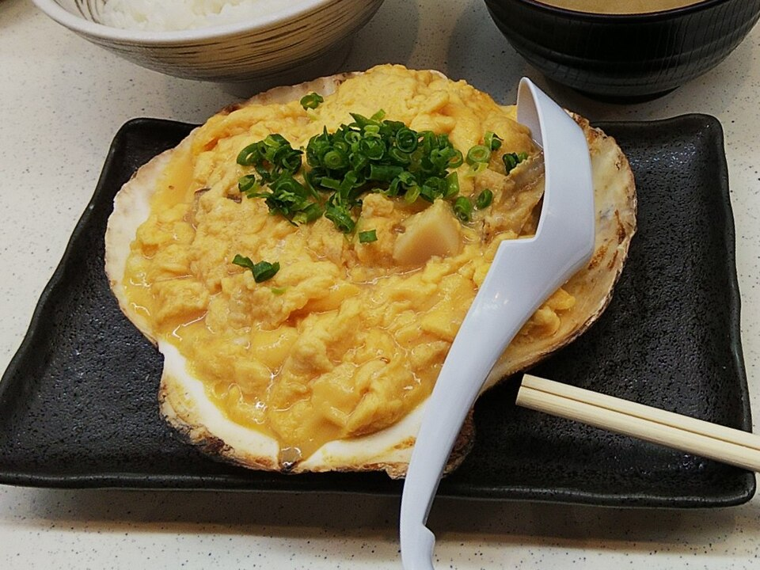
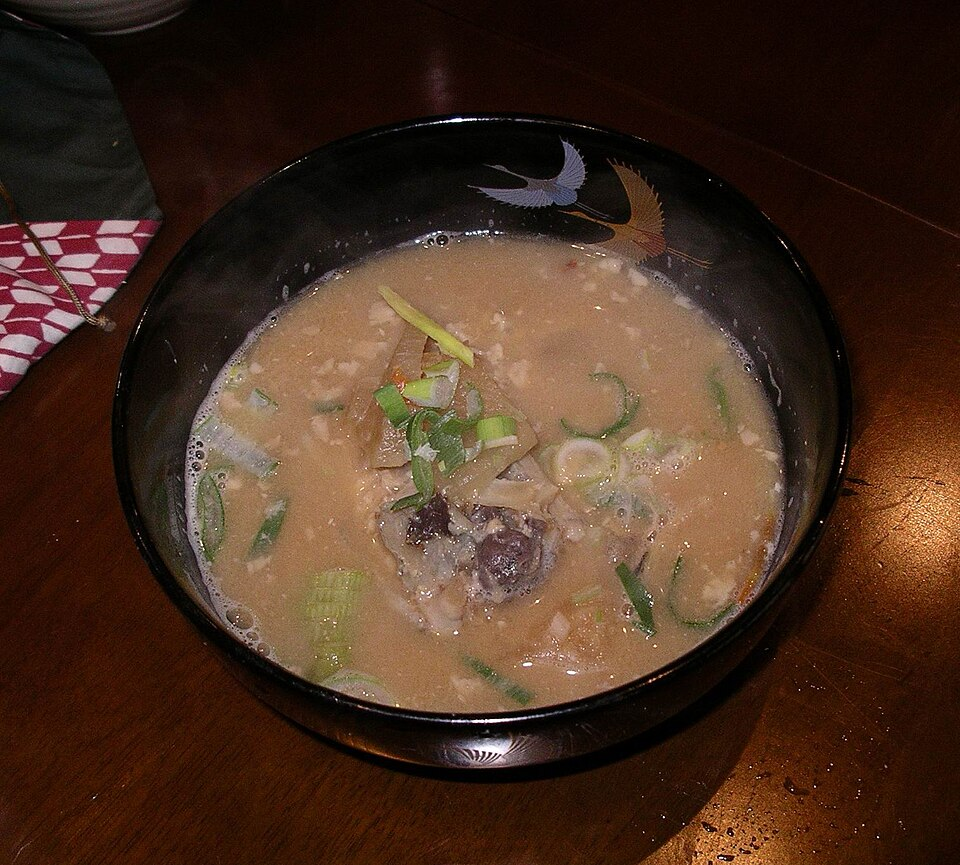

정해 둔 곳 없음
새벽에 집을 나와 8849 첫차를 탄다. 기내나 공항에서 가볍게 해결한다.
2026.10.01 – 10.04 · 1인 · 아오모리
날짜마다 아침·점심·저녁에 어디서 무엇을 시키는지만 모았다. 간판과 메뉴판의 일본어가 그대로 적혀 있으니 가리키면 된다. 숙소 조식은 3박 모두 요금에 포함이다. 10/1 유튜브·블로그 재조사로 집마다 후기 줄과 새 후보 4곳, 편의점을 더했다. 시장에서 먹는 끼니는 뺐다 (D-014).
← 동선 · 일정으로누르면 그 끼니로 간다
| 아침 | 점심 | 저녁 | |
|---|---|---|---|
| 10.01 목 | —새벽 출발 | 오오니시미소카레우유라멘 | 당일 선택오사나이 · 잇파치스시 |
| 10.02 금 | 숙소 조식또는 나가오 7:00 | 스즈노야구로이시 쓰유야키소바 | 나가오역빌딩 니보시 라멘 |
| 10.03 토 | 숙소 조식또는 킷사 마론 | 니시무라쓰가루 정식 | 당일 선택잇파치스시 · 니시무라 |
| 10.04 일 | 숙소 조식또는 나가오 7:00 | —12:45 귀국편 | —한국 |
11:35 착 → 공항 ATM 에서 현금 → 시내 13시대. 점심은 중휴가 없는 집으로 잡았다

산나이마루야마 복귀가 17:00~17:30 · 마감이 이른 집부터 떨어져 나간다
| 후보 | 역에서 | 걸리는 점 |
|---|---|---|
| お食事処 おさない 오사나이 | 3분 | 帆立貝焼き味噌 정식. 테이블 30석(카운터 없음). 저녁 16:00~19:00, 월 휴무. 마감 19:00 이라 복귀가 늦으면 자동 탈락. 후기: 문 열 때 가도 20~30분 줄. 정식에 ほたてフライ(가리비 튀김)를 같이 시킨다. 입구 메뉴 사진을 가리키면 된다. 현금·PayPay · 후기 |
| 一八寿し 잇파치스시 | 7분 | 1층 카운터 10석. 11:30~14:30, 17:00~21:00, 제2·4·5 일요일 휴무. 오사나이보다 두 시간 늦게 닫는다. 메뉴의 にぎり 松·竹 세트를 가리키면 된다. 후기: 영어 메뉴판을 준다. 부정기로 닫혀 있었다는 후기가 있다 → 닫혔으면 나가오 |
| 青森食堂 아오모리 식당 · 새 후보 | 0분 | 역빌딩 라비나 1F. 11:00~20:30, 수 휴무. 쓰가루 라멘·카레. 늦게 돌아온 날 실내로 바로 간다 |
| 中華そば ひらこ屋 㐂ぼし 히라코야 기보시 · 새 후보 | 택시 | 青葉 1초메. 10:30~21:00 (L.O. 20:30), 화 휴무. 나가오보다 진한 니보시 라멘 |

핫코다를 보류하고 기차로 다니는 날이다 (D-015). 행동식은 필요 없다. 시각은 2일차 페이지
보류한 핫코다 날의 점심(스카유 키멘안 소바)은 핫코다를 되살릴 때 쓴다. 내용은 D-015 이전 판에 있다.
전부 역 도보권. 10:00 체크아웃 → 짐 맡기고 루프 → 아스팜에서 점심. 토요일이라 저녁은 일찍 간다

토요일이라 시내 식당이 가장 밀린다 · 일찍 갈 것
| 후보 | 성격 | 걸리는 점 |
|---|---|---|
| 一八寿し 잇파치스시 | 1층 카운터 10석 · にぎり 松·竹 세트를 가리킨다 | 스시를 넣는다면 3일차가 유일한 자리다. 4일차는 조식 뒤 바로 공항이다. 21:00 에 닫는다 |
| 西むら 니시무라 (저녁으로) | 쓰가루 정식 + 13층 전망대 | 무쓰만 일몰이 들어온다. 점심을 여기로 잡으면 중복. 둘 중 하나만 |
| お食事処 おさない 오사나이 | 가이야키미소 정식 + 가리비 튀김 | 월 휴무라 토요일은 연다. 19:00 마감에 줄이 20~30분이라 18시 전에 줄을 선다 |
| 中華そば ひらこ屋 㐂ぼし 히라코야 기보시 · 새 후보 | 진한 니보시 라멘 · 택시 | 21:00 (L.O. 20:30), 화 휴무 |
09:30 공항버스 (09:50 편은 없다) → 12:45 KE2194. 관광은 넣지 않는다
2026-10-01 유튜브·블로그 재조사에서 나왔다 · 시간·휴일은 각 출처 기준
날짜마다 그날 여는 집만 위 표에도 넣었다 · 지라이야(이자카야)는 여행자 조건으로, 시장 식당은 D-014 로 뺐다
| 후보 | 언제 | 걸리는 점 |
|---|---|---|
| くどうラーメン 쿠도 라멘 | 2·3일차 아침 | 新町 1초메, 1948년 창업. 목 휴무(10/1 안 됨). 개점 7:30 / 8:00 으로 출처가 갈린다. 야키보시 국물의 담백한 라멘, 완탕멘 · 출처 |
| 中華そば ひらこ屋 㐂ぼし 히라코야 기보시 | 저녁 · 택시 | 青葉 1초메라 걸어가긴 멀다. 10:30~21:00 (L.O. 20:30), 화 휴무. 본점은 타베로그 라멘 백명점(2024) · 출처 |
| 大もりや 오모리야 | 3일차 점심 | 역 동구 도보 4분, 安方. 12:00~22:00, 부정기 휴무. 점심 御膳. 카드 가능, QR 불가. 밤에는 회·술 위주 갓포라 점심이 맞다 · 출처 |
| 青森食堂 아오모리 식당 | 저녁 폴백 | 역빌딩 라비나 1F, 나가오와 같은 회사. 11:00~20:30, 수 휴무. 쓰가루 라멘·카레·갈릭포크 · 출처 |
2026-10-01 블로그·유튜브·공식 페이지 조사 · 상시 상품만 · 가격은 안 적는다
역 NewDays 와 현 안의 편의점에 있다
| 상품 | 어디 | 왜 |
|---|---|---|
| 工藤パン イギリストースト | 현 안 세븐·로손·패미마·NewDays | 마가린과 설탕을 바른 아오모리 식빵. 기본은 マーガリン＋グラニュー糖. 아침이나 산행 간식 · 제조사 |
| acure 青森りんご | 역 NewDays·역 자판기 | JR동일본의 아오모리 사과 100% 주스. 품종판(名月 등)은 계절 한정 · 출처 |
한국 블로그·유튜브에서 되풀이해 나온 것 · 라벨 일본어를 가리키면 된다
| 체인 | 상품 | 왜 |
|---|---|---|
| 세븐일레븐 | たまごサンド | 계란 샌드위치. 아침 1순위. 샌드위치 칸에서 たまご 표시를 찾는다 · 블로그 |
| 세븐일레븐 | ななチキ | 계산대 옆 뼈 없는 치킨 · 공식 |
| 세븐일레븐 | 手巻おにぎり ツナマヨネーズ · 鮭 | 참치마요·연어 주먹밥 |
| 패밀리마트 | ファミチキ | 매출 1위 치킨. 거의 모든 후기가 꼽는다 · 공식 |
| 패밀리마트 | スフレ・プリン | 수플레 푸딩. 공식 인기 1위 디저트 (맛 변형판은 한정) · 블로그 |
| 로손 | からあげクン レギュラー | 한입 치킨 5개입. レッド도 상시 · 공식 |
| 로손 | プレミアムロールケーキ | 생크림 롤케이크 · 블로그 |
| 로손 | もちぷよ | 쫀득한 떡빵 디저트 · 블로그 |
산 위에는 식당도 매점도 거의 없다 · 2시간 30분 하산 기준
| 상품 | 왜 |
|---|---|
| 井村屋 スポーツようかん · えいようかん | 양갱. 손에 안 묻고 물 없이 먹는다. 오래 간다 · 등산 매체 |
| ブラックサンダー | 작은 초코바. 어느 편의점에나 있다 |
| 塩分チャージタブレッツ · 男梅 | 염분 보충 사탕 |
| ミックスナッツ | 견과류. 무게 대비 열량이 높다 |
| 주먹밥 鮭 · 梅 · 昆布 | 마요네즈 없는 것. 라벨의 消費期限을 보고 그날 아침에 산다 |
원문 → 발음 → 뜻 · 카드와 교통카드(Suica)가 된다
| 원문 | 발음 | 뜻 |
|---|---|---|
| 温めますか？ | 아타타메마스카? | 데워 드릴까요? (점원이 묻는 말) |
| はい、お願いします。 | 하이, 오네가이시마스. | 네, 데워 주세요. |
| 大丈夫です。 | 다이조부데스. | 괜찮아요. (안 데워도 돼요) |
| お箸を ください。 | 오하시오 쿠다사이. | 젓가락 주세요. |
| 袋を ください。 | 후쿠로오 쿠다사이. | 봉투 주세요. (봉투는 돈을 받는다) |
| カードで。 | 카도데. | 카드로요. |
원문 → 발음 → 뜻 · 안 통하면 원문을 보여 준다
| 원문 | 발음 | 뜻 |
|---|---|---|
| 一人です。 | 히토리데스. | 한 명이에요. |
| これを ください。 | 코레오 쿠다사이. | 이거 주세요. (메뉴를 가리키며) |
| バター トッピングで お願いします。 | 바타 톳핑구데 오네가이시마스. | 버터 추가해 주세요. (오오니시) |
| 大盛りで お願いします。 | 오오모리데 오네가이시마스. | 곱빼기로 주세요. (키멘안) |
| カード 使えますか？ | 카도 츠카에마스카? | 카드 되나요? |
위 후보가 다 어긋날 때
후보가 다 안 되는 날에도 열려 있다
| 長尾中華そば 青森駅前店 나가오 츄카소바 | 역빌딩 라비나 P1F | 7:00 개점 ~ 21:00. 쓰가루 니보시(멸치) 라멘. 실내 이동이라 비에도 안 젖는다. 2일차 아침도 여기가 답이다. 후기: 가게 밖 식권기에서 먼저 산다. 처음이면 あっさり(가벼운 맛). 카운터 8석, 줄은 밖에서 · 공식 |